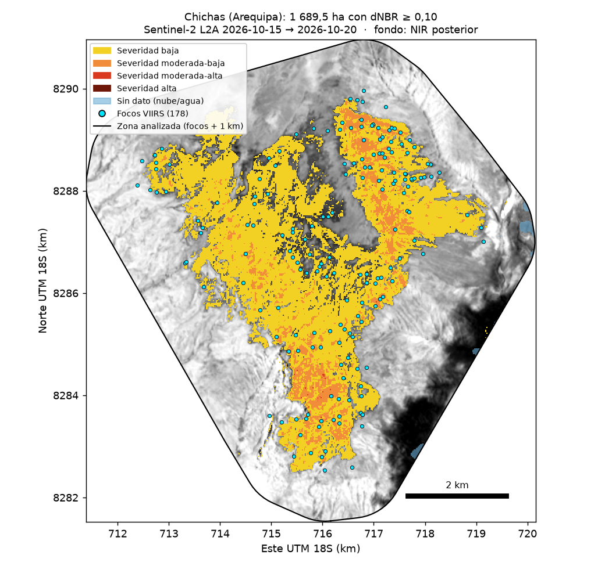
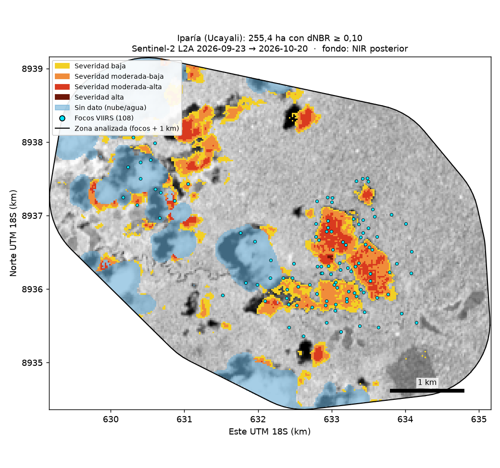
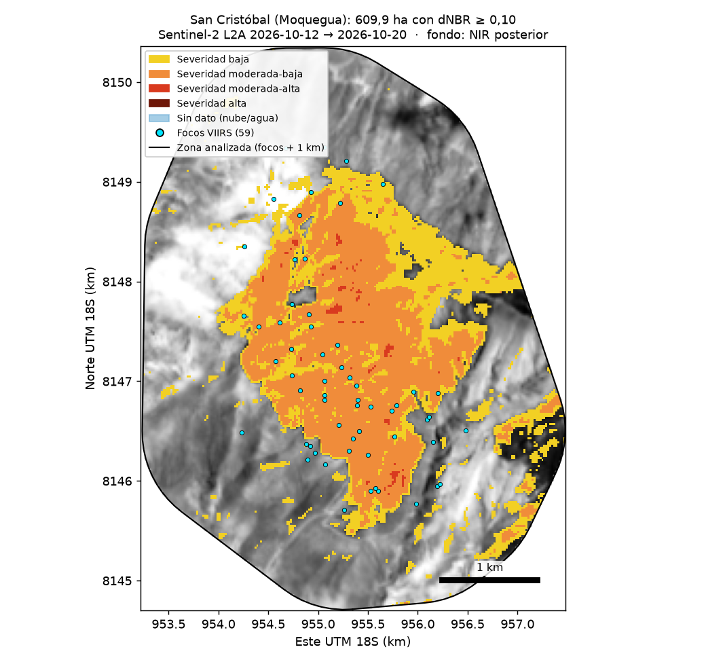
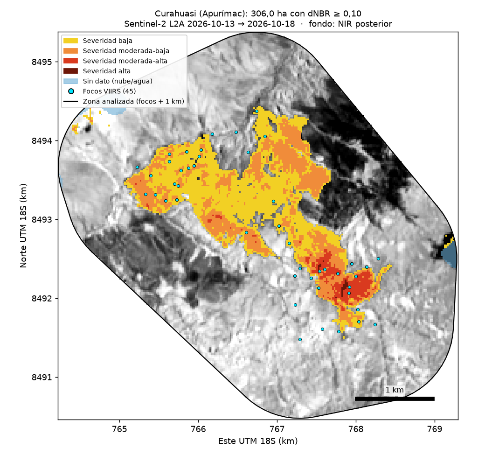
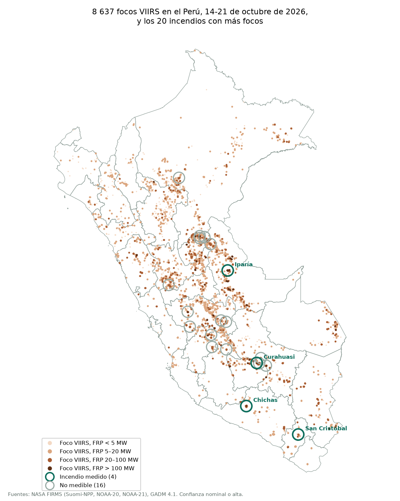
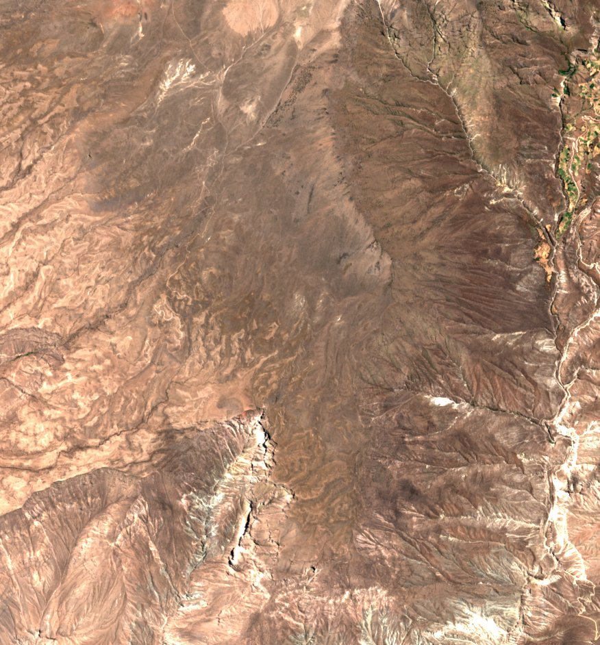
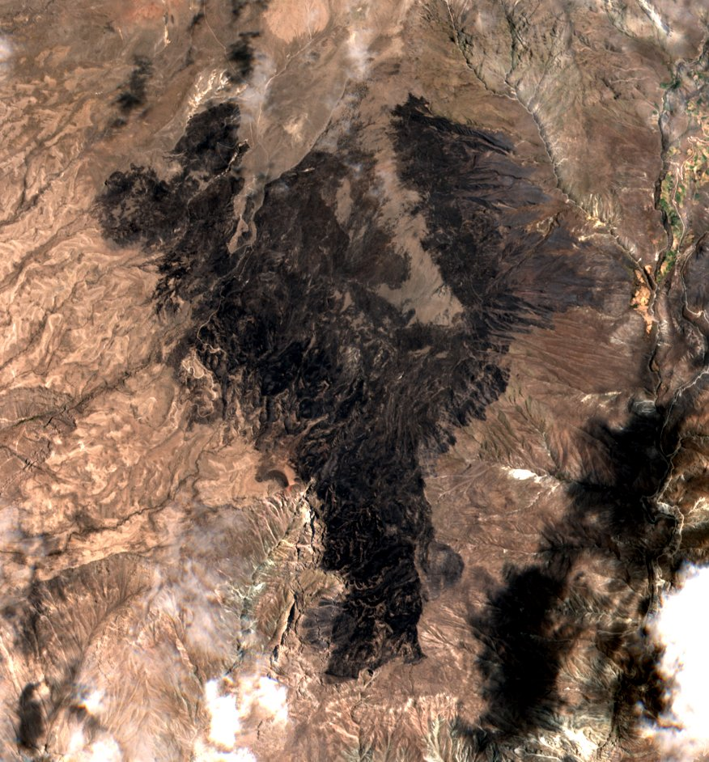

1El resultado principal: el 80 % no era medible
Sobre cada uno de los 20 incendios con más focos de calor entre el 14 y el 21 de octubre de 2026 se corrió exactamente el mismo procedimiento: buscar una imagen Sentinel-2 antes y otra después del fuego, enmascarar nubes, calcular el dNBR y cruzarlo con un mapa de cobertura. La regla para aceptar una imagen se fijó antes de mirar los datos: como máximo el 30 % de la zona tapada.
incendios medidos: una tasa de éxito del 20 %.
descartados por nubes sobre la zona; otros 2 sin ninguna pasada de Sentinel-2 y 1 por el prefiltro.
sin diferencia significativa entre Andes y Amazonía en la tasa de éxito.
El sesgo no es geográfico sino de calendario. En la Amazonía se midió el 12,5 % de los incendios y en los Andes el 25,0 %, una diferencia que la prueba exacta de Fisher no distingue del azar (p = 0,62). En octubre empieza la temporada de lluvias en ambas regiones. La consecuencia es incómoda: la temporada de fuego coincide con la temporada en que no se ve el suelo, así que cualquier indicador nacional de área quemada en tiempo casi real mide solo el subconjunto de incendios que las nubes dejaron pasar.
| Incendio | Región | Focos | Envolvente (ha) | Quemado (ha) | Resultado |
|---|---|---|---|---|---|
| Chichas (Arequipa) | Andes | 178 | 2 957 | 1 689,5 | Medido · pastizal |
| Iparía (Ucayali) | Amazonía | 108 | 724 | 255,4 | Medido · bosque |
| San Cristóbal (Moquegua) | Andes | 59 | 587 | 609,9 | Medido · pastizal |
| Curahuasi (Apurímac) | Andes | 45 | 475 | 306,0 | Medido · pastizal |
| Río Tambo (Junín) | Amazonía | 279 | 3 051 | — | Nubes sobre la zona (55,4 % de la zona inválida) |
| Curahuasi (Apurímac) | Andes | 201 | 3 227 | — | Sin pasada de Sentinel-2 |
| Callería (Ucayali) | Amazonía | 116 | 1 530 | — | Nubes sobre la zona (47,2 % de la zona inválida) |
| Huanoquite (Cusco) | Andes | 80 | 1 220 | — | Nubes sobre la zona (100,0 % de la zona inválida) |
| Nueva Requena (Ucayali) | Amazonía | 65 | 416 | — | Nubes sobre la zona (77,7 % de la zona inválida) |
| Cayna (Huánuco) | Andes | 63 | 724 | — | Nubes sobre la zona (100,0 % de la zona inválida) |
| Mazamari (Junín) | Amazonía | 62 | 793 | — | Sin pasada de Sentinel-2 |
| Palca (Junín) | Andes | 61 | 853 | — | Nubes sobre la zona (100,0 % de la zona inválida) |
| Santa Cruz (Loreto) | Amazonía | 50 | 560 | — | Nubes sobre la zona (100,0 % de la zona inválida) |
| Nueva Requena (Ucayali) | Amazonía | 49 | 315 | — | Descartada por el prefiltro (18,2 % de la zona inválida) |
| Nueva Requena (Ucayali) | Amazonía | 48 | 308 | — | Nubes sobre la zona (100,0 % de la zona inválida) |
| San Juan de Jarpa (Junín) | Andes | 42 | 497 | — | Nubes sobre la zona (89,4 % de la zona inválida) |
| Caja (Huancavelica) | Andes | 39 | 181 | — | Nubes sobre la zona (47,5 % de la zona inválida) |
| Ayahuanco (Ayacucho) | Andes | 39 | 400 | — | Nubes sobre la zona (55,1 % de la zona inválida) |
| Ancahuasi (Cusco) | Andes | 36 | 259 | — | Nubes sobre la zona (65,7 % de la zona inválida) |
| San Miguel (Ayacucho) | Andes | 35 | 264 | — | Nubes sobre la zona (63,7 % de la zona inválida) |
Nueva Requena (Ucayali, 49 focos): la zona estaba limpia en un 81,8 %, pero el pipeline descarta de entrada las escenas con más del 80 % de nubes en la escena completa. Es un caso medible perdido por una decisión propia. No se corrigió para no cambiar el método a mitad del análisis.
Se excluyó un grupo de focos en Paracas (Ica, 42 focos en 49 ha) con un criterio escrito y aplicado a los 40 primeros candidatos: no es un incendio si más de la mitad de las detecciones S-NPP de 2012-2025 en su zona son de tipo 2 en FIRMS (fuente estática terrestre, como una planta industrial). En Paracas lo son 3 770 de 3 838 (98,2 %), detectadas en 2 139 días distintos; en los demás candidatos, ninguna. Su lugar lo ocupa San Miguel (Ayacucho), el siguiente por número de focos.
Los cuatro que sí se pudieron medir
Mismo método, misma escala de colores: severidad (dNBR) sobre el infrarrojo cercano de la imagen posterior, con los focos VIIRS encima y el contorno de la zona analizada.

1 689,5 ha · pastizal dominante
Antes 15 oct (0,0 % de nubes en la zona) → después 20 oct (0,2 %)

255,4 ha · bosque dominante
Antes 23 sep (0,0 % de nubes en la zona) → después 20 oct (19,0 %)

609,9 ha · pastizal dominante
Antes 12 oct (0,0 % de nubes en la zona) → después 20 oct (0,0 %)

306,0 ha · pastizal dominante
Antes 13 oct (0,0 % de nubes en la zona) → después 18 oct (0,9 %)
Leyenda común: amarillo, severidad baja; naranja, moderada-baja; rojo, moderada-alta; granate, alta; celeste, sin dato por nube o agua; puntos cian, focos VIIRS. Cada mapa trae su barra de escala. Las zonas tienen tamaños distintos.
2El mapa nacional y cómo se comporta el fuego

de los 8 637 focos fue diurno.
de los 2 602 incendios duró menos de 12 h entre su primer y su último foco.
de potencia radiativa (FRP) mediana por foco.
de 2 602 incendios superaron los 3 días.
El fuego peruano de esa semana fue mayoritariamente corto, de baja potencia y de día. VIIRS detecta mejor de noche, cuando el suelo está frío y el contraste térmico es mayor, así que el predominio diurno no se explica por el sensor.
1 345 de los 2 602 incendios tienen un solo foco; para ellos la duración es cero. La duración mide el tiempo entre la primera y la última detección, no cuánto ardió el fuego.
3El caso medido: Chichas, 1 690 ha donde nunca había ardido



15 oct20 octquemadas (dNBR ≥ 0,10), el 31 % de las 5 399 ha analizadas.
del distrito de Chichas (38 976 ha según los límites GADM 4.1).
focos dentro del área quemada entre 2012 y 2025.
Recurrencia: catorce años sin un solo foco
Entre 2012 y 2025, con entre 346 y 366 días de registro al año, el área que ardió en 2026 no registró ni un solo foco. En el anillo de 1 km hubo uno en 2013 y cuatro en 2018. En los ocho días de registro de octubre de 2026 hubo 44 focos dentro y 61 contando el anillo.
Queda descartada una quema de manejo recurrente. Una zona de quema habitual aparece en el registro año tras año, y esta no aparece nunca. La salvedad es de escala: una quema muy pequeña o muy rápida puede ocurrir entre dos pasadas del satélite sin dejar foco.
Además, el 56,7 % de los focos de Chichas fue nocturno: la tercera firma más nocturna de los veinte, en un país donde el 79,9 % de los focos fue diurno.
4Reto C: qué tipo de suelo ardió
| Cobertura (WorldCover 2021) | Hectáreas | % de lo quemado |
|---|---|---|
| Pastizal | 1 223,0 | 72,4 % |
| Matorral | 455,6 | 27,0 % |
| Suelo desnudo | 10,3 | 0,6 % |
| Agua | 0,4 | 0,0 % |
| Bosque | 0,1 | 0,0 % |
| Cultivo | 0,0 | 0,0 % |
| Total | 1 689,4 | 100 % |
Cero hectáreas de cultivo y una décima de bosque. El daño es pérdida de forraje y el afectado es la ganadería extensiva. Con recurrencia nula, además, no es forraje que se queme en un ciclo de manejo.
5Tres hipótesis que cayeron
a) «En pastizal la severidad sale baja y en bosque alta»: no se sostiene
Los pastizales van del 14,4 % al 58,9 % de severidad moderada o superior, y el único bosque medible, Iparía, cae dentro de ese rango con 57,7 %. Chichas es el atípico. Con n = 4 no se puede concluir que la escala de Key y Benson esté mal calibrada para el pastizal andino; para eso hace falta severidad medida en campo. Y no encontramos ningún estudio de dNBR con validación de campo en puna o páramo: ese vacío es en sí mismo un hallazgo.
b) «Los focos sobrestiman de forma sistemática»: no
−64,7 % en Iparía, −42,9 % en Chichas, −35,6 % en Curahuasi y +3,9 % en San Cristóbal. Tres sobrestiman y uno subestima, en un rango demasiado amplio para un factor de corrección. Lo que queda en pie es que contar focos no mide hectáreas.
c) «Las nubes castigan sobre todo a la Amazonía»: no
| Región | Incendios | Medidos | % medidos | Nubes | Sin pasada | Prefiltro |
|---|---|---|---|---|---|---|
| Amazonía | 8 | 1 | 12,5 % | 5 | 1 | 1 |
| Andes | 12 | 3 | 25,0 % | 8 | 1 | 0 |
Fisher, p = 0,62. Las nubes tumbaron el 62,5 % de los casos amazónicos y el 66,7 % de los andinos.
6Robustez
El umbral recorre 1 973,6 ha; el par de imágenes, 412,8; la máscara, 216,1; la zona, 4,2. El umbral solo mueve 3,1 veces más que las otras tres decisiones juntas (633,1 ha).
La curva colapsa rápido porque los píxeles quemados se apiñan cerca del umbral. Con 0,35, a Chichas le queda el 2 % del área medida con 0,10; a Iparía, el 39 %.
Más rigor aparente, menos señal. Endurecer la máscara de nubes reduce el área en 216,1 ha, pero no porque quite nubes: la capa SCL de Sentinel-2 clasifica 178,7 ha de la propia cicatriz como «zona oscura» y 37,4 ha como «sin clasificar», y la máscara estricta las descarta.
7Validación contra MCD64A1
MCD64A1, el producto mensual de área quemada de MODIS, aún no existe para octubre de 2026, así que se validó el método en incendios de 2024 con una regla fijada antes de ver resultados.
| Muestra | n | Razón mediana (nuestro / MCD64A1) | Rango | Chichas corregida (ha) |
|---|---|---|---|---|
| 3 casos (regla fijada) | 3 | 1,048 | 1,016 – 1,198 | 1 612 |
| 21 candidatos medibles | 21 | 1,171 | 0,678 – 2,018 | 1 443 |
| solo pastizal dominante | 1 | 1,171 | 1,171 – 1,171 | 1 443 |
La cifra principal sigue siendo 1 690 ha; las corregidas son alternativas, por tres razones: la validación es casi toda bosque amazónico y el caso es pastizal andino; MCD64A1 usa píxeles de 500 m y es otra estimación satelital, no un dato de campo; y varios de los 21 candidatos se solapan en el espacio, así que no son independientes.
8Concentración y MAUP
| Partición | Unidades con focos | Gini (solo con focos) | Gini (todas) |
|---|---|---|---|
| distrito | 644 de 1 815 | 0,735 | 0,906 |
| provincia | 180 de 195 | 0,737 | 0,758 |
| grilla 10 × 10 km | 1 588 de 13 464 | 0,609 | 0,954 |
| grilla 10 × 10 km desplazada 5 km | 1 595 de 13 453 | 0,607 | 0,953 |
El Gini va de 0,607 a 0,954 según la unidad y según si se cuentan las unidades sin fuego. Cualquier índice de concentración que no declare su unidad no significa nada. Lo robusto es otra cosa: la distribución es muy desigual en las cuatro particiones.
9Implicaciones
- No se puede construir un indicador nacional de área quemada en tiempo casi real para el Perú en octubre: con 4 de 20, lo que se reporta es una muestra sesgada.
- Las hectáreas no son comparables entre estudios si no declaran el umbral: en Chichas, solo el umbral las mueve 1 973,6 ha.
- Endurecer la máscara puede empeorar la medición.
- Contar focos no mide daño: la desviación frente al área medida va de −64,7 % a +3,9 %.
- El gasto parece rendir más en prevención que en combate: solo 11 de 2 602 incendios superaron los 3 días.
- Un índice de concentración exige declarar su unidad espacial.
10Qué haría falta para ponerle precio
- Capacidad de carga del pastizal quemado: cuántos animales sostenía.
- Tiempo de recuperación del forraje: cuántas temporadas tarda en volver.
- Hogares y cabezas de ganado dependientes de esas hectáreas.
- Intencionalidad: si fue una quema deliberada que se escapó o un accidente. Esta sí se pudo acotar en parte: con recurrencia cero queda descartada la quema rutinaria.
La teledetección acota qué y cuánto se quemó, pero no determina si fue una pérdida.
11Método
- Focos: VIIRS de NASA FIRMS (Suomi-NPP, NOAA-20 y NOAA-21, CSV de 7 días descargado el 21 de octubre de 2026), confianza nominal o alta, filtrados a Perú con GADM 4.1.
- Incendios: dos focos pertenecen al mismo incendio si están a ≤ 1 km y ≤ 48 h entre sí.
- Par de imágenes: Sentinel-2 L2A de Microsoft Planetary Computer; se elige la imagen con menos zona inválida, antes y después del fuego.
- dNBR y severidad: NBR = (B8A − B12)/(B8A + B12); dNBR = NBR antes − NBR después; clases de Key y Benson.
- Cobertura: ESA WorldCover 2021 cruzado con los píxeles quemados.
- Contraste: recurrencia con el archivo anual S-NPP 2012-2025, sensibilidad a cada decisión y validación contra MCD64A1.
| Imagen | Fecha | Tile | Nubes en la zona | Nubes en la escena |
|---|---|---|---|---|
| Antes | 2026-10-15 | 18LYH | 0,0 % | 0,3 % |
| Después | 2026-10-20 | 18LYH | 0,2 % | 11,4 % |
- Umbral: dNBR ≥ 0,10.
- Máscara SCL: sombra, nube media, nube alta, cirros, agua y sin dato, en cualquiera de las dos fechas.
- Zona: envolvente de los focos + 1 km = 5 399 ha en Chichas, rejilla de 20 m.
- Recurrencia solo con S-NPP, el único con registro continuo desde 2012: sumar NOAA-20 (desde 2018) y NOAA-21 (desde 2023) inflaría los años recientes.
Código, tablas y cómo reproducir: src/, outputs/ y el README del repositorio.
12Limitaciones y qué no se pudo hacer
- n = 4. Ninguna comparación entre incendios medidos tiene potencia estadística.
- Un foco no es un incendio ni una hectárea: es un píxel de 375 m donde un satélite detectó calor.
- La validación no cubre el bioma del caso: casi toda es bosque amazónico, contra un producto de 500 m.
- La firma diurna no prueba intencionalidad.
- El prefiltro descartó al menos un caso medible (Nueva Requena).
- Paracas se excluyó como fuente estática con el criterio escrito de la sección 1; con otro criterio el top 20 cambiaría.
- Una semana no es una temporada.
- WorldCover es de 2021: la cobertura pudo cambiar antes del incendio.
- Las cifras oficiales no se suman a estas: usan otros métodos y otras definiciones.